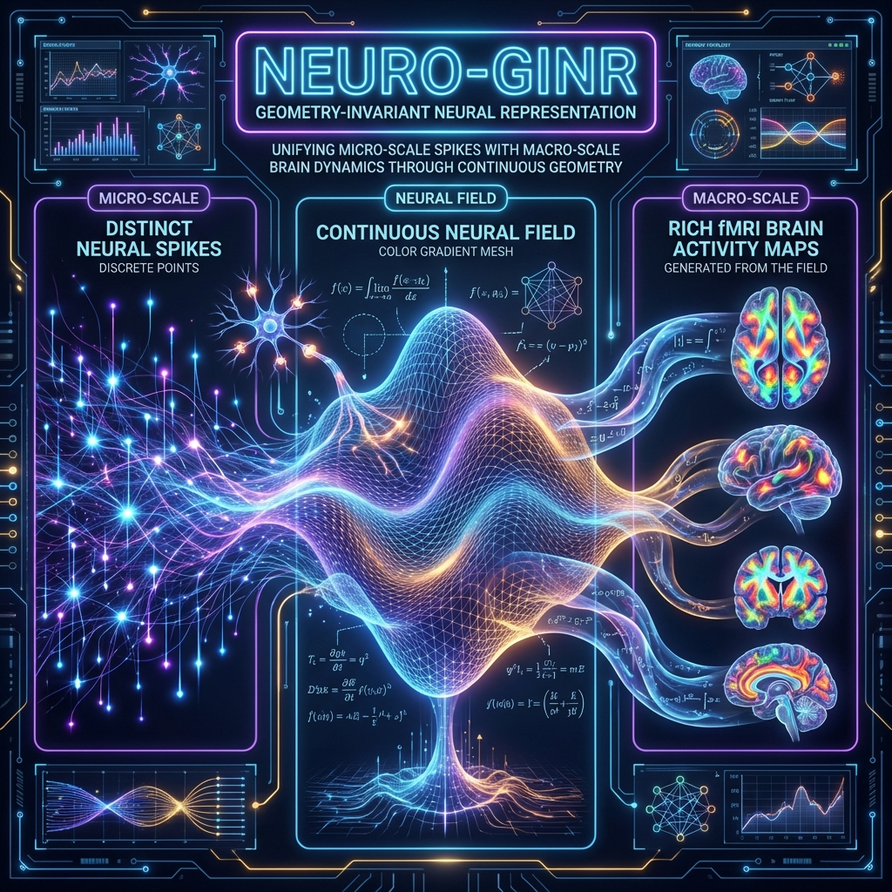

Figure 2. Reactive Homeostasis vs. Predictive Allostasis: 차세대 AI의 진화 방향
Figure 2. Reactive Homeostasis vs. Predictive Allostasis: 차세대 AI의 진화 방향본 연구단은 기존의 이산적(Discrete) 뇌영상 분석의 한계를 넘어, 뇌 활동을 시공간 상의 '연속적인 장(Field)'으로 모델링하는 SCENT(Scalable Conditioned Neural Fields) 방법론을 도입한다. 이를 통해 마우스의 스파이크(Micro) 데이터, 인간의 Intracranial EEG, 그리고 fMRI(Macro) 데이터를 단일한 수학적 공간에서 통합하고 상호 생성하는 세계 최초의 Cross-Species Generative Foundation Model을 제안한다.
입자 물리학 분야에서 거대 데이터를 처리하기 위해 개발된 GINR (Geometry-Invariant Neural Representation) 기술은 이러한 연속적 모델링이 대규모 데이터에서도 작동함을 입증한 성공적인 사례(FM4NPP)이며, 본 연구는 이 검증된 아키텍처를 뇌신경 데이터에 최적화하여 적용한다.
본 제안서는 홍석준 교수팀의 "Titans" 전략과 차지욱 교수팀의 "대규모 모델링" 역량을 결합하여, 다음과 같은 혁신적 구조를 제시한다 (Figure 1 참조).
"Generalizing Liquid Time (LTC) to Space-Time" * 개념: SCENT 논문의 핵심 원리를 적용하여, 기존 LTC (Liquid Time-Constant)의 시간적 연속성을 시공간(Space-Time)으로 확장한다. 뇌 활동을 고정된 픽셀이 아닌 연속 함수 $f(x, t)$로 모델링한다. * 혁신성: 전극의 위치가 달라도, 종(Species)이 달라도 변하지 않는 "불변 표상(Invariant Manifold)"을 추출한다. 이는 마우스의 신경 활동을 인간의 뇌 활동으로 "Zero-shot 번역"하는 기술적 토대가 된다.
"예측 불가능한(Surprising) 정보만 기억한다." * Backbone: Global Neural Workspace (GNW) 이론을 구현하기 위해, 24시간 연속된 생체 신호를 선형 복잡도($O(N)$)로 처리하는 Mamba (SSM) 아키텍처를 도입한다. * Memory Integration: 인코더(Part 1)가 예측에 실패한 "Surprisal(놀라움)" 정보만을 선택적으로 장기 기억소(Titans)에 저장하여, 효율적인 학습과 망각 기전을 구현한다.
"From World-Aware to Allostasis-Driven AI"
Figure 2. Reactive Homeostasis vs. Predictive Allostasis: 차세대 AI의 진화 방향
단순한 의료 기기나 어플리케이션 개발이 아니다. 우리는 감각과 인지를 통합하는 "범용 뇌 파운데이션 모델(General-Purpose Brain Model)"을 구축한다. * 입력: 희소한(Sparse) 웨어러블 뇌파 신호 및 다중 감각 데이터 * 출력: 고해상도 뇌 활동 생성 및 통합적 인지 상태 추론 * 활용: 뇌신경 과학 및 감각 연구를 위한 "핵심 생성 엔진(Generative Engine)"으로 기능하며, 향후 신경 보철, 디지털 치료제 등 다양한 응용 분야의 기술적 기반을 제공한다.
 Figure 1. Neuro-GINR 아키텍처: 미시 세계(Spikes)와 거시 세계(fMRI)를 잇는 불변량 학습 파이프라인